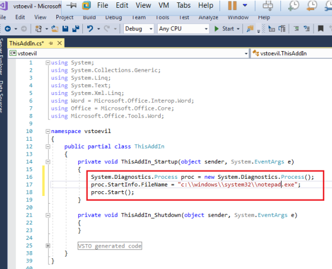

https://bohops.com/2018/01/31/vsto-the-payload-installer-that-probably-defeats-your-application-whitelisting-rules/
Please, Tell Me More About This “VSTO” Application
VSTO (.vsto) is actually a manifest file that is bundled with a collection of files for VSTO application deployment and installation. Upon compilation in Visual Studio (Visual C#), the VSTO release bundle is created with the following files:
- <appname>.vsto – VSTO Manifest
- <appname>.dll – VSTO Assembly
- <appname.dll>.manifest – VSTO Assembly Manfest
- <appname>.pdb – VSTO Debugging Information
- Microsoft.Office.Tools.Common.vX.X.Utilities.dll – Visual Studies Helper Assembly
With other options selected within Visual Studio, it is possible to bundle other (pre)requisite files for application compatibility. When “optionally” deployed with ClickOnce, the VSTO bundle is ‘published’ within a ClickOnce Directory structure that includes a ClickOnce VSTO deployment manifest file.
VSTO Walkthrough
This POC walkthrough will consist of VSTO application payload creation, compilation, installation, and execution. Let’s begin…
First, we create a project in Visual Studio. For VSTO, we must (and we do) have the VSTO prereqs installed. To create a project, we select Visual C#, Office/SharePoint, and the VSTO add-in for an Office application. For this exercise, we choose Word and call the project vstoevil…
Visual Studio sets up our baseline template. We edit the ThisAddIn_Startup function with our payload. In this case, we will invoke notepad.exe…

Open the project properties menu. Under Application, verify or edit the target framework. Changing the target framework will likely result in the refreshing the Visual Studio project, but it should take us back to this screen afterward. For this exercise, we’ll stick with the current framework…

Select properties/options as necessary. Under Signing, this is where an important decision has to be made with regard to signing the ClickOnce manifest. A legitimate cert has its own merits (but other requirements) for installation (such as in a social engineering situation). A self-signed cert is easy to create but will likely prevent installation/execution of the payload (such as in a social engineering situation). In our example, we are going to self-sign without a password.
However, we will not be installing with a ClickOnce deployment package in this walkthrough. In our lab, ClickOnce will likely fail due to policy and the ClickOnce deployment wizard certificate check. Instead, we are going to move the compiled bundle (as outlined above) to the lab machine and directly execute the VSTO manifest installer…

Under Publish, this is where you can set options for managing the deployment package such as web publishing, version increments, update checks, prerequisite software, file dependencies, etc. For now, we will remove pre-reqs and set a publishing path but keep everything else at a default level…

Let’s go ahead and “Publish” the project. This will compile the code as well as prepare the ClickOnce Application. Since our attention is only on the compiled code, we verify the contents within the “Release” directory…

We move our VSTO bundle to the target machine that is configured with Default AppLocker Rules. Our logged-in user does not possess any administrator rights or privileges. For validation of rules, let’s attempt to load vstoevil.dll directly. You may recall control.exe from another blog entry…

As expected, our DLL assembly was prevented from running due to AppLocker rules. Let’s invoke the vsto installer (vstoinstaller.exe) by executing vstoevil.vsto. We are prompted with a sanity check…

(Un)Fortunately, our unprivileged user account can perform a “no-admin” installation of this package. After installation and verification, we launch Word to see our new add-in and payload results…

Success! Notepad.exe is executed when the VSTO add-in program is loaded in Word.